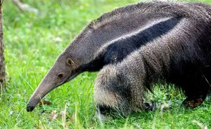

All your fav animals in one place w/facts, rankings, and more!
Animal Rankings

My favorite animal ↑
Gabe's 2026 Animal Rankings
Tier
Mammal
Reptile
Bird
Fish
Amphibian
S-Tier
Anteaters
Tokay Gecko
Penguins
Mudskipper
Pumpkin Toadlet
A-Tier
Dogs
Chameleons
Peregrine Falcon
Flying fish
Desert Rain Frog
B-Tier
Wombat
Basilisk Lizard
Kingfisher
Sailfish
Hellbender
C-Tier
Beaver
Marine Iguana
Ostrich
Oarfish
Fire Salamander
D-Tier
Okapi
Komodo Dragon
Kiwi
Sunfish
Cane Toad
F-Tier
Tasmanian Devil
Horny Lizard
Cuckoo Bird
Lionfish
Hairy Frog
Top 5 Animals:
Anteaters: Named for their diet of mainly ants, the 4 species of anteater range from southern Mexico through Central America and across South America to northern Argentina. The largest of the 4 species, the giant anteater, can grow to be 6-7 feet long with 4 inch claws and a 2 foot long tongue!
Tokay Gecko: These reptiles have a unique adaptation that allows them to cling to smooth vertical surfaces, ceilings, and glass without any glue or suction. They do this with folded, accordion-like ridges across the toe called lamellae that mold around different surfaces. Then, millions of microscopic hairs called setae that cover each lamella split into hundreds of tiny, flattened tips called spatulae. Weak electrostatic attractions between molecules become significant when surfaces are extremely close so, with billions of spatulae touching a surface, molecules are brought within nanometers for these forces to act, and a huge total adhesive force is created. The result: a single toepad can support the gecko’s full body weight on a smooth vertical surface.
Penguins: These flightless birds can be found from the Galapagos Islands and South America to Antarctica and Australia and New Zealand. Their diet consists of krill, fish, and squid with some consming more of one than another depending on the species. Many penguins mate for life, and males often present pebbles to females during courtship. Penguins huddle together to keep warm in harsh climates.
Mudskipper: Mudskippers are amphibious fish capable of breathing air, “walking” on land with modified pectoral fins, and living in intertidal mudflats across Africa, Asia, Australia, and Polynesia. They grow up to about 30 cm, build complex burrows, display territorial and courtship behaviors, and can even climb low branches.
Pumpkin Toadlet: These tiny adorable frogs are about the size of a skittle, measuring 12.5-19.7 mm. They are endemic to southeastern Brazil, living in the leaf litter of Atlantic rainforests at 200–1,250 m elevation. They are bright yellow-orange to signal toxicity. Their toxin blocks nerve signals, causing paralysis. Some are too toxic to handle with bare hands.